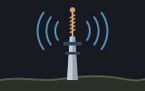

emley-moor is a web server. Point a browser at
http://127.0.0.1:8080/ and it answers, in Shoddy, over a socket
it opened itself.
cd mills/emley-moor
./build.sh # serve
./build.sh test # the routing tests — no network at allNamed for the mast on Emley Moor, a few miles from Huddersfield in the same West Riding as the mills this language is named for — the tallest freestanding structure in the country, and one whose entire job is to take a signal in and put it out again to whoever is listening. So does this.
This is the only interesting thing about the mill, and it is worth the whole page:
Def Respond(request As String) As StringRaw request text in, raw response text out. No socket, no clock, no state. Routing, page building and escaping all live behind that one signature, which means every route can be graded by calling it with a string:
Assert(HttpStatus(Respond(Get("/"))) = 200, "THE INDEX IS THERE")
Assert(HttpStatus(Respond(Get("/nothing-here"))) = 404, "AND ANYTHING ELSE IS A 404")test.shoddy does exactly that, twenty-odd times, with
no network, no --allow-net and no server running.
What is left outside the function is accept, read, write, close — about twenty
lines, in emley-moor.shoddy, with nothing in them to get
wrong.
It is the same seam mungo-caverns draws when it makes a turn a function rather than a loop that prints. A cave adventure and a web server are the same shape of problem: something arrives, something goes back, and the interesting part is the middle. Put the socket at the edge and the middle becomes testable.
| Route | What you get |
|---|---|
/ | An index page, styled in the mill's own colours. |
/echo | The request you just sent, taken apart — method, path, every header, and the raw text. |
/plain | text/plain, for curl. |
| anything else | A 404, to prove it can. |
The /echo page is the one that earns its keep. It parses the
incoming request with HttpHeaders from
https — a machine written to read a
reply. A request has the same header block a reply does, so the words
read one without knowing the difference, and the mill proves it every time you
load the page.
The path is a stranger's text, and it goes on the page. A server that
pastes it in raw has written its own cross-site scripting hole, so everything
echoed back goes through Esc first — ampersand before angle
brackets, or the escapes get escaped. There is a test that fetches
/<script>alert(1)</script> and asserts the tags do not
survive into the body.
Every reply says HTTP/1.0 and Connection: close.
That is a promise: the server hangs up when it has finished, which is what
makes read to end of input the correct rule for whoever is reading —
including net's own
RecvAll. The reply also carries a
Content-Length, and one of the tests asserts that number is the
actual length of the body it sent.
One connection is accepted, answered and closed before the next is looked
at. No keep-alive, no threads, no chunked encoding. Accept is
non-blocking and returns 0 when nobody is at the door, so the
idle path is a poll around Sleep rather than a spin.
It binds 127.0.0.1 only — reachable from this machine and
nowhere else. ListenOn is there if you disagree, and the risk is
then yours: this is a plaintext HTTP server written to demonstrate a seam, not
to face the internet.
Shoddy has a TLS client — TcpSecure upgrades a
connected socket — and no TLS server. Accept always hands back a
plain socket. Server-side TLS drags in certificate provisioning, which is a
larger question than this mill wants to answer, so it speaks plaintext and
stays on the loopback where that is nobody's problem.
The accept loop is ServeForever. It was Loop for
about four minutes, until the program failed with unknown word: LOOP
at the call site — Loop is a reserved word, and a Def
of it is simply not there when you come to call it. Worth knowing, because the
error names the caller rather than the definition.
| Machine | Why | |
|---|---|---|
| https | HttpHeaders
reads the incoming request, and pulls in net underneath. | |
| net | Listen,
Accept, WaitRecvFor, Send,
Close — the whole socket half. | |
| str | Join and
Replace build every page and escape the parts a stranger
wrote. | |
| file | Included for the serving-from-disk route that is not written yet. |